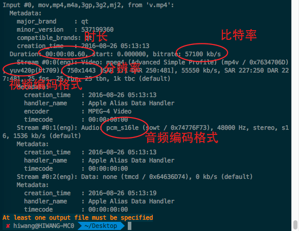

使用FFmpeg处理音视频
本文主要是介绍如何使用ffmpeg命令行工具进行各式各样的音视频处理操作——缩放、裁剪、剪辑、旋转、格式转换，etc。。。学了本文，基本可以把格式工厂之类的音视频处理软件删了。。
一. 安装ffmpeg命令行工具
本文只介绍mac系统下的安装方法，Linux的用户安装也很简单，Win的用户也可以上网找找教程。。。
1. 安装Homebrew
Homebrew号称是“OS X 不可或缺的包管理器”，通过homebrew，可以很方便地在mac上安装常用的命令行工具。给出官网：http://brew.sh/
安装和使用方法官网说得很详细，恩。。
2. 安装ffmpeg
上面我们已经安装了Homebrew，接下来我们很方便地就可以安装ffmpeg，只需要一行命令：
$ brew install ffmpeg //使用brew安装ffmpeg
执行了上面的命令后，brew会开启疯狂下载模式。。如果网速快的话，一会儿就可以下载完毕。然后brew还会自动把ffmpeg的启动路径加到path环境变量中，这样你就可以在任何地方使用ffmpeg了，不需要先cd到ffmpeg安装目录再执行命令了。
brew自动把ffmpeg的启动路径加到path环境变量时，可能会提示“permission denied”，这是因为brew没有更改相关文件的权限，手动加上就好了，举个例子：
$ sudo chmod 777 /usr/share/ // 这个命令是给所有程序添加/usr/share/的读、写、执行权限，执行成功之后就brew就可以更改/usr/share/下的内容了
上面的命令会让你输入当前登录用户的密码，输入你电脑的密码就好啦。
二. 视频处理
1. 剪辑
有时候我们需要截取一个长视频的其中某一段内容，比如从一个视频的第10秒开始，截取6秒的内容，也就是10~16秒的内容，输入一个out.mp4文件
$ ffmpeg -i in.mp4 -ss 00:00:10 -t 00:00:06 -acodec aac -vcodec h264 -strict -2 out.mp4 //从00:00:10开始，截取的长度为00:00:06
参数解释：
-i 代表输入待处理的文件
-ss 代表开始的时间
-t 代表截取的长度。
-acodec 音频编解码器，这个不懂的话也没关系，直接照抄就行。。
-vcodec 音频编解码器，这个不懂的话也没关系，直接照抄就行。。
2. 缩放
很多时候我们需要把一个高分辨率的视频处理成一个低分辨率的视频，以达到减小视频体积的目的。举个例子：把一个10801920的视频缩小到360640
$ ffmpeg -i in.mp4 -vf scale=360:640 -acodec aac -vcodec h264 out.mp4 // 1080*1920-->360*640
参数解释：
-i 代表输入，
-vf 的全称是video filter，即：视频滤镜，缩放其实就是给视频添加一个滤镜。
scale=360:640 scale是一种滤镜，缩放滤镜，格式是：scale=width:height，其中，width和height分别是处理后的宽和高
3. 裁剪
有时候我们想截取一个大视频的中间一部分画面，比如一个10801920的视频，我们想截取中间的10801080的部分，这个也可以实现的：
$ ffmpeg -i in.mp4 -strict -2 -vf crop=1080:1080:0:420 out.mp4
参数解释：
crop 和上面的scale一样，也是视频滤镜的一种，crop是裁剪滤镜。四个参数分别是 width:height:x:y，其中width和height指的是裁剪的宽和高，x和y代表裁剪的区域的左上角的坐标，坐标系原点为原视频的左上角。比如 0:0就代表原视频的左上角，50:50就代表以原视频的左上角为原点的坐标系的50:50位置
4. 旋转
使用ffmpeg可以轻松地旋转视频。举个例子：将一个视频顺时针旋转90度
$ ffmpeg -i in.mp4 -vf rotate=PI/2:ow=1080:oh=1920 out.mp4
参数解释：
视频旋转其实也是一直滤镜。
rotate=PI/2 rotate是旋转滤镜，后面的“PI/2”旋转角度（正数代表顺时针），这里是90度
rotate除了指定旋转角度的参数外，还有其他一些参数：
ow 全称是out width，输出视频的宽度，如果不指定，默认是输入视频的宽度
oh 全称是out height，输出视频的高度，如果不指定，默认是输入视频的高度
5. 调节帧率
帧率会很大程度上影响画面的流畅度和视频的体积，帧率越大，画面越流畅，同时视频体积越大。
我们有时候需要通过降低帧率来减小视频的体积。
举个例子：将一个视频的帧率降到15
$ ffmpeg -i in.mp4 -r 15 out.mp4
参数解释：
-r 帧率
6. 格式转换
ffmpeg具备强大的格式转换功能，这里举几个常用的例子。
$ ffmpeg -i in.mov -vcodec copy -acodec copy out.mp4 // mov --> mp4
$ ffmpeg -i in.flv -vcodec copy -acodec copy out.mp4 // flv --> mp4
$ ffmpeg -i in.gif -vf scale=420:-2,format=yuv420p out.mp4 // gif --> mp4
7. 查看视频的详细信息
有的时候我们需要在处理之前先了解一下视频的参数信息，比如分辨率、比特率等等。可以使用下面的命令：
$ ffmpeg -i in.mp4 // 不加任何参数，只指定输入的视频
来个截图：

三. 音频处理
稍后继续。。。
四. Reference
FFmpeg有着强大的音视频处理能力，其官网给出了众多音视频处理滤镜的使用介绍，文中只提到了一些常用的操作，如果没有你想要的，可以直接去看下官网的滤镜介绍。
转载请注明出处：使用FFmpeg处理音视频 - 专业点
欢迎关注我的公众号

推荐

公众号推荐
欢迎关注我的公众号一起愉快的交流。